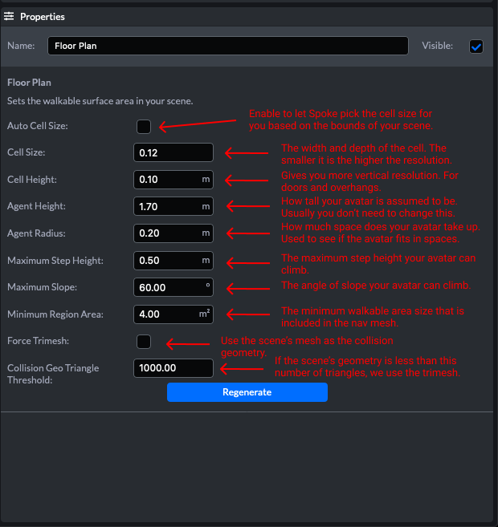

물리학 및 네비게이션(Physics and Navigation)
The Floorplan Element
평면도는 걸을 수 있는 위치와 대화형 객체가 장면과 충돌하는 방식을 정의합니다. 탐색 메시(도보 가능한 위치, 평면도를 선택한 경우 파란색 메시)와 충돌 메시(삼진 또는 높이 필드를 사용하는 경우 빨간색 또는 노란색 메시)를 작성합니다.

Navigation Mesh Generation
재 생성을 클릭하고 장면을 게시할 때 스포크는 다음을 수행하여 탐색 메시(Mesh)를 생성합니다.
퍼스트 스포크는 장면의 모든 보행 가능한 형상을 하나의 큰 메시로 결합합니다. 그런 다음 스포크가 메쉬를 복셀화합니다. 만약 당신이 마인크래프트 세계를 본 적이 있다면, 당신의 그물망들은 마인크래프트 풍경과 같은 것으로 바뀔 것입니다. 여기서 복셀의 크기는 셀 크기와 셀 너비로 정의됩니다.
큰 장면이 나오면 복셀이 많이 필요할 거예요. 때로는 너무 많은 복셀이 부딪힐 수 있다. 스포크에는 사용할 수 있는 적당한 수의 복셀을 유지하는 자동 셀 크기 확인란이 있습니다. 검사를 통해 좋은 결과를 얻을 수 있지만, 일반적으로 이러한 값 중 일부를 수정하면 스포크가 더 나은 결과를 얻을 수 있습니다. 특정 영역에서 걸을 수 있는지 여부를 결정하는 모든 알고리즘은 이러한 복셀에 대해 계산됩니다. 해상도가 높을수록 실제 장면처럼 보이게 됩니다. 예를 들어, 1m 폭의 출입구가 있고 셀 크기가 0.25m인 경우, 복셀화된 데이터 구조의 출입문 폭은 0.75m에 불과할 수 있습니다. 그 중 한 복셀이 출입문 측면과 교차하기 때문입니다. 평면도 계산의 다른 모든 매개변수는 셀 크기와 셀 높이에 따라 달라집니다. 그러니 세포 크기를 0.1m 정도의 작은 크기로 줄이고 재생을 거부하거나 컴퓨터에서 시간이 너무 오래 걸리는 경우 증가시켜 보세요.
셀 크기와 셀 높이를 조정한 후에는 다른 파라미터의 다양한 문제를 해결할 수 있습니다. 접근할 수 없는 통로가 있는 경우 에이전트 반지름 또는 에이전트 높이를 줄여 복셀화된 통로를 통해 아바타가 맞도록 할 수 있습니다. 오를 수 없는 경사로, 계단 또는 언덕이 있는 경우 최대 계단 높이와 최대 경사를 조정해 보십시오. 이러한 매개 변수는 위로 걸어 올라갈 수 있는 개체의 높이와 경로의 최대 기울기를 제어합니다. 개울 한가운데 징검다리 같은 작은 구역이 너무 작아서 걸을 수 없는 경우가 있을 수 있습니다. 최소 영역 영역은 탐색 메시에서 제외하기 전에 영역이 얼마나 작아질 수 있는지 제어합니다. 여기서 에이전트 반지름도 중요합니다.
때로는 메시가 네브 메시 제너레이터와 함께 작동하기에 매우 친숙하지 않을 수 있습니다. 이러한 경우 블렌더에 사용자 정의 네비게이션 메시를 작성하는 것이 좋습니다. 스포크 씬(scene)에 별도의 모델로 추가하는 단순화된 메시일 수 있습니다. 걸을 수 있는 것으로 표시합니다. 그런 다음 다른 모델 대신 걸을 수 없는 것으로 표시합니다. 네비게이션에 대한 작은 수정의 경우 Box Collider를 사용하여 이동 가능한 영역을 만들 수 있습니다.
Collision Mesh Generation
충돌의 경우 스포크에는 두 가지 충돌 메시 생성 방법이 있습니다. 첫 번째는 트라이메쉬야 네 장면의 모든 충돌 가능한 그물들의 조합이지 트리메시가 너무 조밀하면 충돌 시스템의 성능 문제가 발생할 수 있습니다. 이러한 이유로 스포크에게는 키 필드도 있습니다.
높이 필드는 장면을 2D 그리드로 나눕니다. 위에서 보면 높이 필드는 그리드의 각 셀 중심에 있는 높이를 찾아 구성됩니다. 환경에 천을 씌운 것처럼 보이게 됩니다. 실외 지형에서는 비교적 잘 작동하지만, 작은 충돌 물체, 벽, 돌출부가 있을 경우 어려움을 겪는다. 높이 필드는 다중 수준 씬(scene)에 대해 정확한 충돌 메시를 작성할 수 없습니다. 그러면 씬(scene)에 있는 모든 충돌 가능한 지오메트리의 맨 위 레이어에 대한 충돌 지오메트리만 작성됩니다.
박스 충돌기는 두 가지 방법 외에도 사용할 수 있습니다. 복잡한 형상을 가진 메쉬가 있을 때 많은 도움이 될 수 있는 단순화 된 충돌기입니다.